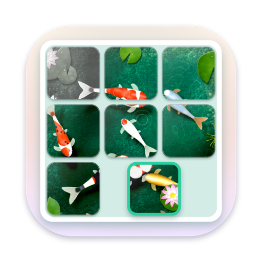

Tilewake
Un trencaclosques lliscant les imatges del qual es desperten.
Què fa
Tilewake és un trencaclosques lliscant amb imatges vives. Una fitxa al seu lloc es desperta i el seu tros de l’escena comença a moure’s; una fitxa fora de lloc dorm, quieta i grisa. L’últim moviment desperta tota la imatge.
- Un viatge per 12 móns pintats, des d’un estany de carpes koi i un riu de fanalets fins a un poble nevat i una òrbita a l’espai, cadascun amb els seus propis sons i un final quan es desperta.
- Taulers de 3×3 a 5×5, amb un par i fins a tres estrelles, i quatre barreges més de cada tauler per tornar-hi a jugar.
- Un trencaclosques diari amb ratxa, i un giny per a ell a l’iPhone, l’iPad i l’Android.
- Joc lliure en qualsevol mida, amb les teves pròpies fotos com a imatge.
- Mira la imatge sencera, números a les fitxes, i estils de so i música tranquils per triar.
Gratuït: els dos primers móns, el trencaclosques diari i el joc lliure en 3×3. Una sola compra desbloqueja tots els móns, totes les mides i les teves pròpies fotos. Requereix iOS 17, macOS 14 Sonoma o Android 8 o posterior.
Privadesa en un paràgraf
Tilewake no té anuncis, ni comptes propis, ni analítiques, ni seguiment. El teu progrés i les teves fotos es queden al teu dispositiu. La política de privadesa completa diu el mateix amb més detall.
Més apps del mateix creador
Apps petites, cadascuna feta per fer una sola cosa ben feta. Sense comptes, sense anuncis i cap no et rastreja.
 StatuetteCPU, memòria, disc i xarxa a la barra de menús.Mac
StatuetteCPU, memòria, disc i xarxa a la barra de menús.Mac TocketteUn temporitzador a un sol gest de la barra de menús.Mac
TocketteUn temporitzador a un sol gest de la barra de menús.Mac ZonetteTots els fusos horaris que t’importen, a un clic.MaciPhone i iPadAndroid
ZonetteTots els fusos horaris que t’importen, a un clic.MaciPhone i iPadAndroid LunetteLa Lluna i el Sol, d’un cop d’ull.MaciPhone i iPadAndroid
LunetteLa Lluna i el Sol, d’un cop d’ull.MaciPhone i iPadAndroid LunaretteEl calendari lunar, en quatre tradicions.MaciPhone i iPadAndroid
LunaretteEl calendari lunar, en quatre tradicions.MaciPhone i iPadAndroid
PausettePauses suaus per a la vista i l’esquena.Mac PoisetteEsquena dreta, amb l’avís dels AirPods que portes.MaciPhone i iPad
PoisetteEsquena dreta, amb l’avís dels AirPods que portes.MaciPhone i iPad HushetteSons ambientals tranquils que mai no es repeteixen.MaciPhone i iPadAndroid
HushetteSons ambientals tranquils que mai no es repeteixen.MaciPhone i iPadAndroid TapsodySons de teclat mecànic mentre escrius.Mac
TapsodySons de teclat mecànic mentre escrius.Mac ThrumlineLes teves pulsacions, en directe a la barra de menús.Mac
ThrumlineLes teves pulsacions, en directe a la barra de menús.Mac NightjarMantén el Mac despert. De debò.Mac
NightjarMantén el Mac despert. De debò.Mac UmbretteEnfosqueix-ho tot menys la finestra on treballes.Mac
UmbretteEnfosqueix-ho tot menys la finestra on treballes.Mac PrompetteUn teleprompter just sota la càmera.MaciPhone i iPadAndroid
PrompetteUn teleprompter just sota la càmera.MaciPhone i iPadAndroid TalletteUna cinta de paper per als teus comptes.MaciPhone i iPadAndroid
TalletteUna cinta de paper per als teus comptes.MaciPhone i iPadAndroid ProbetteTot el que és tècnic d’un fitxer multimèdia, en paraules.MaciPhone i iPadAndroid
ProbetteTot el que és tècnic d’un fitxer multimèdia, en paraules.MaciPhone i iPadAndroid BindetteConverteix fitxers d’àudio en un audiollibre com cal.MaciPhone i iPadAndroid
BindetteConverteix fitxers d’àudio en un audiollibre com cal.MaciPhone i iPadAndroid LettretteObre fitxers winmail.dat i .msg tal com es van enviar.MaciPhone i iPad
LettretteObre fitxers winmail.dat i .msg tal com es van enviar.MaciPhone i iPad Nhanh TayPosa quatre respostes en ordre. Ràpid.MaciPhone i iPadAndroid
Nhanh TayPosa quatre respostes en ordre. Ràpid.MaciPhone i iPadAndroid PinetteNotes sempre a la vista.MaciPhone i iPadAndroid
PinetteNotes sempre a la vista.MaciPhone i iPadAndroid UsagetteEls límits d’ús de Claude a la barra de menús.Mac
UsagetteEls límits d’ús de Claude a la barra de menús.Mac SquiggoDibuixa amb un amic simpàtic.MaciPhone i iPadAndroid
SquiggoDibuixa amb un amic simpàtic.MaciPhone i iPadAndroid ForemanFeines, pressupostos i factures per a oficis.MaciPhone i iPadAndroid
ForemanFeines, pressupostos i factures per a oficis.MaciPhone i iPadAndroid Chăm luyệnPràctica de primària en vietnamita, llegida en veu alta.iPhone i iPad
Chăm luyệnPràctica de primària en vietnamita, llegida en veu alta.iPhone i iPad